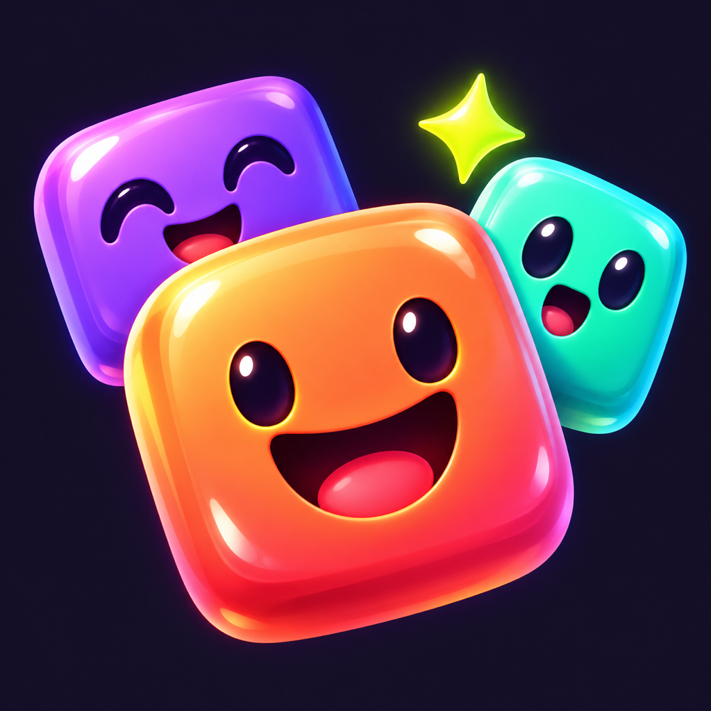

Политика конфиденциальности
Область действия и контакты
Офлайн-версии Popzuno для мобильных устройств и браузера. Разработчик: Mert Bekisoglu. Конфиденциальность и поддержка: mertbek@gmail.com. Обновлено 29 октября 2026 года.
Локальные данные
Необязательные имена, уменьшенные/обрезанные копии выбранных фото, кадрирование, рекорды, этапы, язык и настройки звука/вибрации сохраняются локально. Можно играть без фотографий с рисованными персонажами.
Фото и лица
Обрабатывается только выбранное фото. Поиск положения лица и обрезка выполняются на устройстве; нет идентифицирующего шаблона лица, аккаунта распознавания или загрузки фото на сервер. Используй разрешённые снимки и получай необходимые согласия для других людей и детей. Камера используется только при её выборе в системном диалоге iOS. Android использует системный выбор отдельных изображений без общего доступа к галерее.
Передача и обмен
Нет аккаунтов, рекламы, отслеживания, аналитики, облачной таблицы или передачи на наши серверы. Покупки в магазинах обрабатывают Apple/Google. Результат передаётся через системное/браузерное меню или буфер обмена только по твоему действию, без фото и имён. Письмо поддержке передаёт сообщение и адрес через почтового провайдера; не отправляй лишние личные фото.
Хранение и удаление
Локальные данные остаются до удаления. Моя семья удаляет отдельные фото; полное удаление также стирает имена, рекорды и настройки. Исходные фото не меняются. В зависимости от настроек iOS данные могут попасть в резервную копию системы; приложение не удаляет прежние копии. Резервное копирование Android отключено. Данные переносной версии управляются браузером. Копиями управляй в настройках системы/браузера. Письма поддержке хранятся по необходимости для запроса; можно запросить удаление.
Внешние службы
Для страниц поддержки/политики и почтовых приложений действуют их правила соединения, безопасности и конфиденциальности. Фото игры автоматически туда не отправляются. Изменения обработки данных требуют обновления политики и сведений магазинов до выпуска.